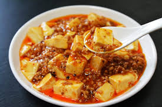

Mapo-tofu

Description
Mapo Tofu is a classic Sichuan dish famous for its "mala" (numbing and spicy) flavor profile, along with its tender tofu and savory minced meat. It's characterized by the use of fermented chili bean paste (Doubanjiang), fermented black beans (Douchi), chili flakes, and Sichuan peppercorns.
Ingredients
- 1 block (approx. 400-500g) Silken or Soft Tofu
- 100g Minced Pork or Beef
- 2 tbsp Pixian Doubanjiang (Sichuan Chili Bean Paste)
- 1 tbsp Fermented Black Beans (Douchi), finely chopped (optional)
- 1-2 tsp Chili Flakes (adjust to taste)
- 1 tsp Ground Sichuan Peppercorns
- 2 cloves Garlic, minced
- 1 tsp Ginger, minced
- 2 tbsp Cooking Oil
- 1 tbsp Soy Sauce (light)
- 1 tsp Cooking Wine (for marinating meat)
- A pinch of Sugar
- Cornstarch slurry (1 tbsp cornstarch + 2 tbsp water)
- 150-200ml Beef or Pork Broth (or water)
- 2 tbsp Chopped Green Onions (for garnish)
Steps
- Cut the tofu into 2cm cubes. Blanch the tofu in lightly salted water for 1-2 minutes, then carefully drain. This helps it hold its shape and reduces the beany flavor.
- Marinate the minced meat with cooking wine and a pinch of soy sauce.
- Heat cooking oil in a wok or pan over medium heat. Add the marinated minced meat and stir-fry until it changes color and is cooked through.
- Add Pixian Doubanjiang and fermented black beans (if using). Stir-fry over low heat until the oil turns red and aromatic.
- Add minced ginger, garlic, and chili flakes. Stir-fry for another 30 seconds until fragrant.
- Pour in the broth or water, add soy sauce and sugar. Bring to a boil.
- Gently slide the tofu cubes into the wok. Use the back of a spatula to carefully push the tofu, rather than stir-frying, to prevent it from breaking.
- Cover and simmer on low heat for 5-8 minutes, allowing the tofu to absorb the flavors.
- Thicken the sauce: Stir the cornstarch slurry well, then gradually pour it into the wok while gently pushing the tofu. Cook until the sauce thickens and coats the tofu evenly.
- Sprinkle with ground Sichuan peppercorns and chopped green onions before serving.
Home